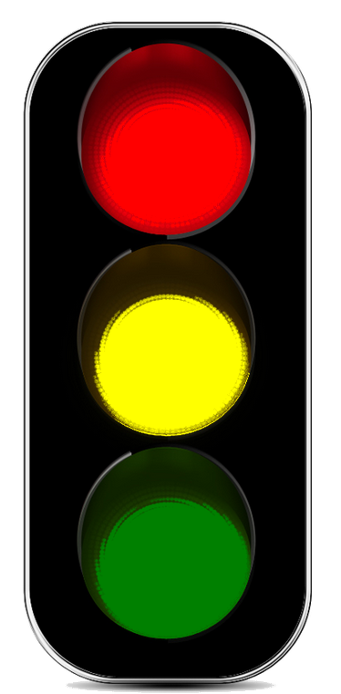
share the traffic
<a>control the lights</a>
<a href="https://github.com/theterg/web-trafficlight">get the code</a>
<a href="">read theterg's writeup</a>
or click to continue the story on how we built an networked controllable party trafficlight
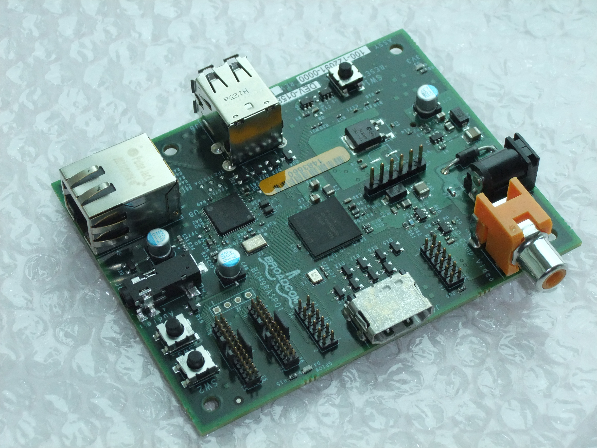
So, we finally got our Raspberry Pi!
(we being jedahan.com and http://terg.is)
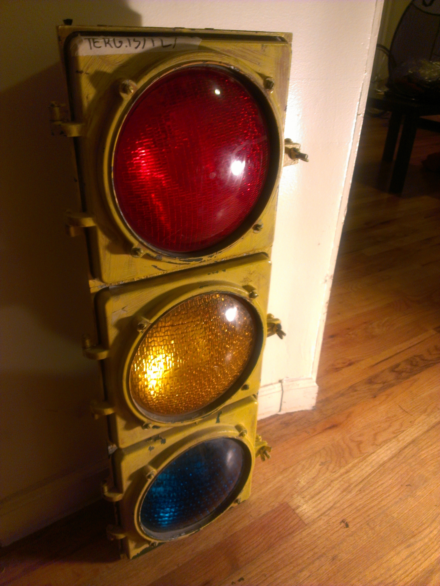
...and we already had this awesome traffic light
(hooray for troy antique stores)
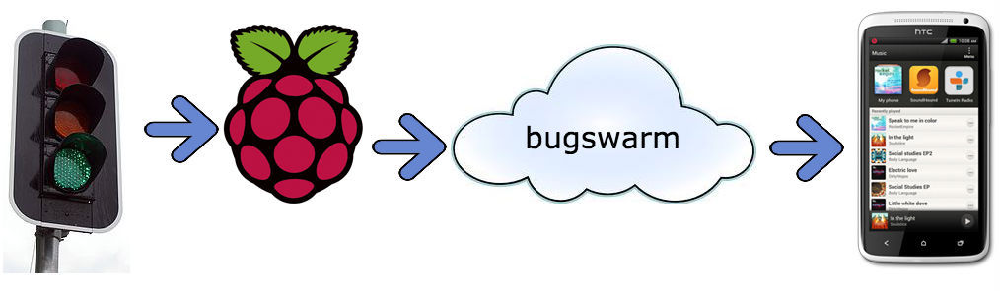
So a plan was made to share the lights with the world
We wanted a way for anyone to control the lights and see in real-time what colors are on
The control is no problem for an arduino, but the Pi really shines when a full network stack is needed
So we wrote a <a href="http://terg.is/tl/">website</a> using the http://bugswarm.net <a href="https://github.com/c4milo/bugswarm-js">javascript client</a> to let any web browser talk to the Pi
The Pi is running a <a href="https://github.com/buglabs/bugswarm-tools">python client</a> which makes it easy to map red/yellow/green messages to toggle GPIO pins
Due to the awesomeness of programming for linux, it was easy to get python to write to /sys/class/gpio/...
A more thorough hardware writeup/howto is viewable on <a href="http://terg.is/?page_id=189">theterg's website</a>
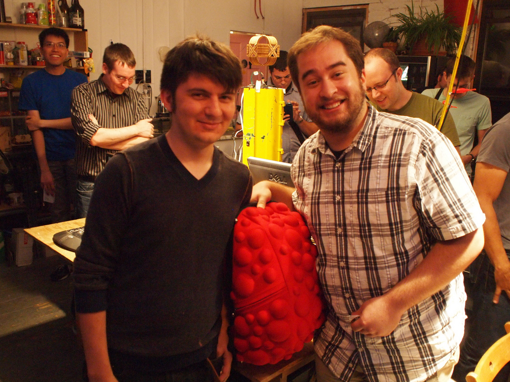
Which was deemed a cool enough project by Adafruit!
They gave us an awesome goodie bag which is definitely inspiring for more ambitious projects!
Thanks <a href="http://adafruit.com/">Adafruit</a>, <a href="http://raspberrypi.org">Raspberry Pi</a> and <a href="http://www.nycresistor.com">NYC Resistor</a>!
<a href="http://twitter.com/jedahan">Jonathan Dahan</a> and <a href="http://twitter.com/theterg">Andrew Tergis</a>
2012-09-20 02:32:10 UTC
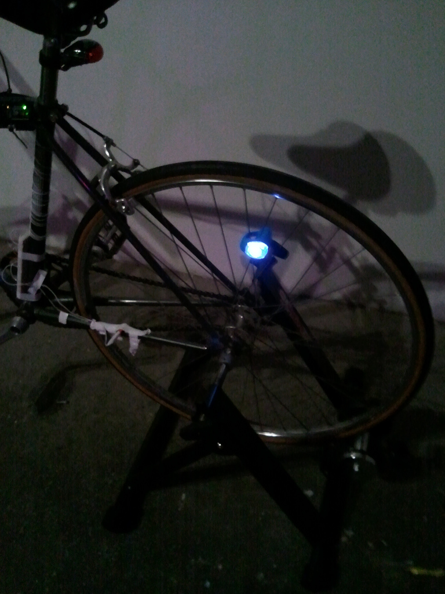
Bike-In Movie
Movie too boring? Pedal Faster!<br />Movie going too fast? Slow Down.<br /><br />Control the playback speed of Doug Engelbart's <a href="http://sloan.stanford.edu/mousesite/1968Demo.html#complete">1968 Demo</a> with the bike!
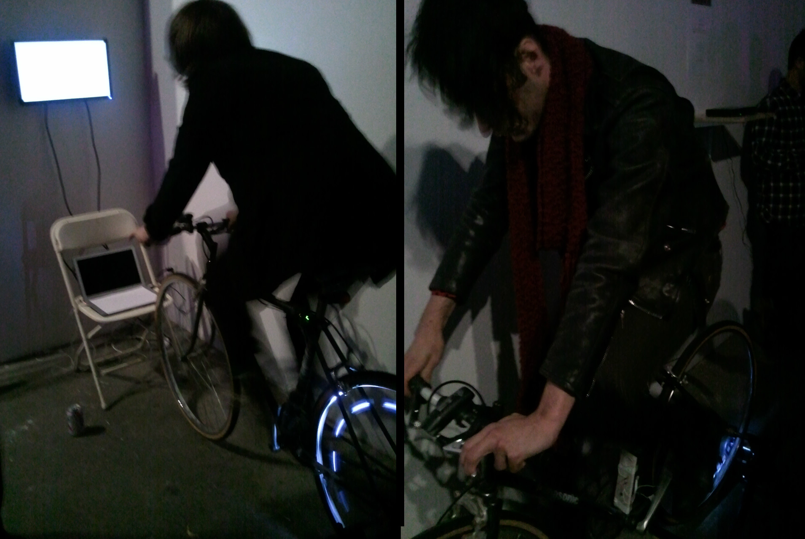
An Arduino running Firmata talked to Processing on the laptop. Processing sent out an OSC message to Quartz Composer, which controlled the video.<br /><br />The lite-up wheel got a lot of attention.
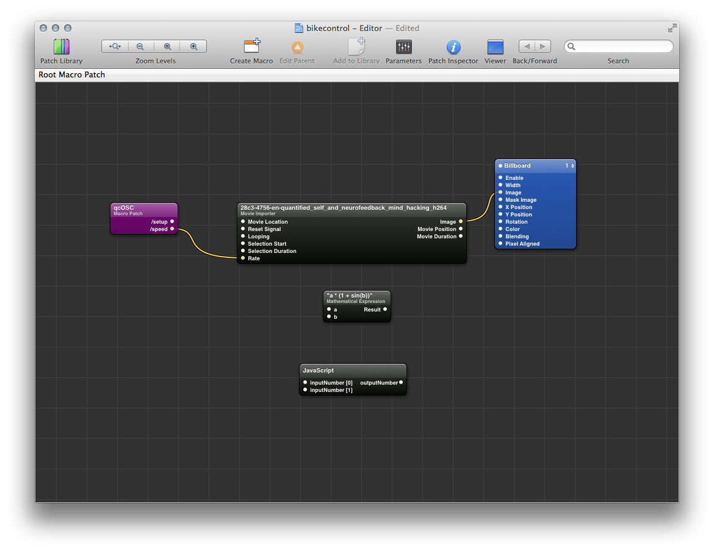
The code is available on <a href="github.com/jedahan/bike-in-movie">github.com/jedahan/bike-in-movie</a><br /><br />Lots of thanks to <a href="http://www.boxysean.com">Sean McIntyre</a> for the bike trainer, and <a href="http://319scholes.org">319 Scholes</a> for the bike and space!
2012-01-29 00:00:00 UTC
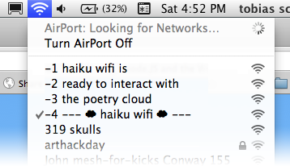
Haiku Wifi
Haiku wifi is a public bulliten board, cleverly taking over your wireless network list
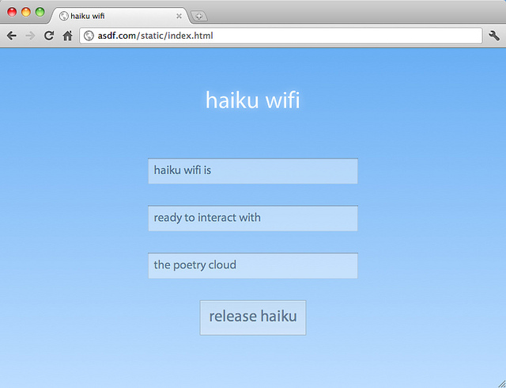
Connect to the access point and you can write your own poetry!
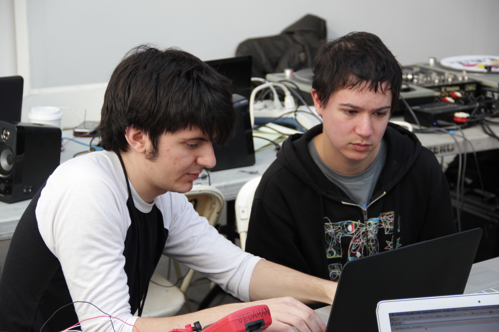
<a href="http://sundialtone.com">Toby Schachman</a> and <a href="http://jonathan.is">I</a> created this hack at <a href="http://arthackday.net">art hack day</a>, hosted by <a href="http://319scholes.org">319 Scholes</a>. Many thanks to those who helped us realize the project in such a short time. Thanks to <a href="http://www.boxysean.com/projects/">Sean McIntyre</a> for providing the router and valuable input. Thanks to <a href="http://bnewbold.net">Bryan Newbold</a> for helping develop the ideas further.
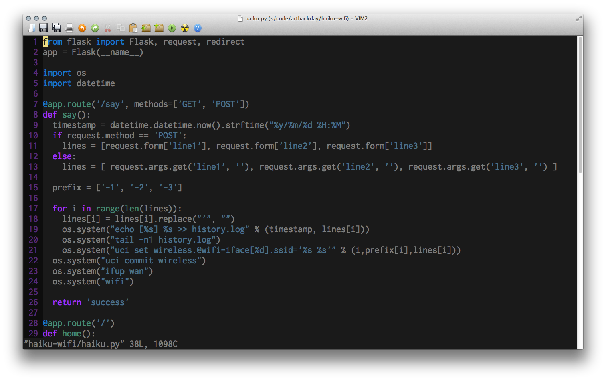
Code and documentation on how to set this up yourself is available on <a href="http://github.com/jedahan/haiku-wifi">github.com/jedahan/haiku-wifi</a>
2012-01-28 15:05:00 UTC
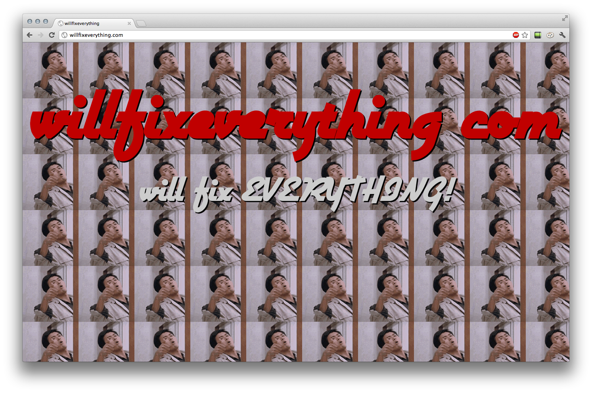
<a href="http://android.willfixeverything.com"> android</a>
<a href="http://2.6.35.willfixeverything.com"> 2.6.35</a>
<a href="http://coffee-script.willfixeverything.com"> coffee-script </a>
<a href="http://the.next.build.willfixeverything.com"> the next build </a>
<a href="http://github.com/jedahan/willfixeverything"> * source code</a>
2011-04-22 05:47:00 UTC